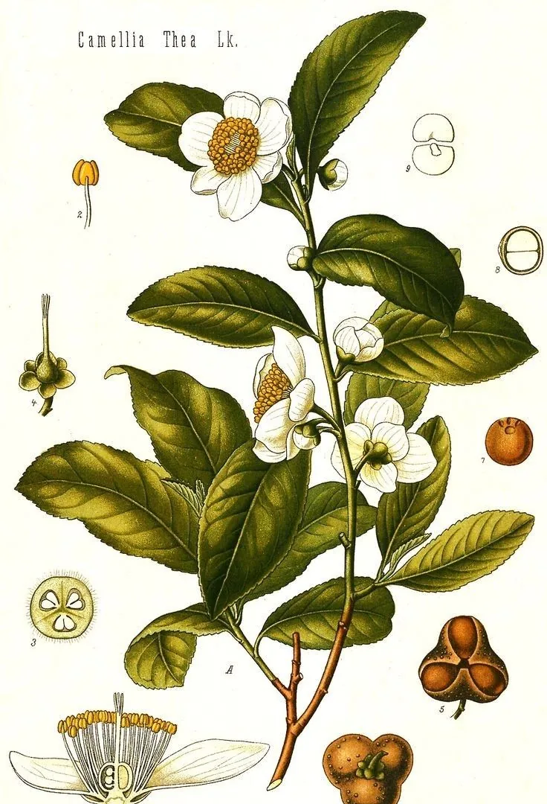

Чайний курс · 4 модулі
Записані уроки про чайну церемонію, види чаю, посуд і про те, як заробляти на чаї. Дивіться по порядку, у власному темпі. Кожен модуль завершується коротким тестом.
Почати з модуля 01Чотири модулі, які варто проходити по черзі. Прогрес зберігається у вашому браузері.

Одна рослина
Зелений, білий, улун, пуер: усі вони з камелії китайської. Різниця в тому, яку частину листа збирають і як її обробляють. Про це другий модуль.
Довідник: види чаю